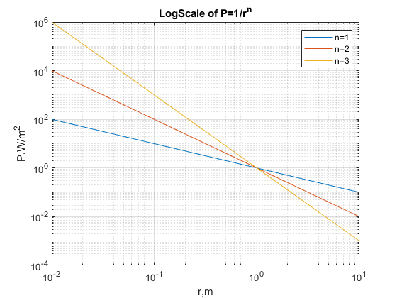

Contents
LINEAR SCALE
close all;
clear;
clc;
figure
n = [1,2,3];
for z = 1:length(n)
x = 0.1 : 0.01 : 10;
y = 1./((x).^n(z));
plot(x, y);
hold on;
end
title('Linear Scale of P=1/r^n')
xlabel('r,m')
ylabel('1/x^n')
grid on
hold off;
legend('n=1','n=2','n=3')
LOGLOG SCALE
figure
for n= 1:1:3
xvals = 0:0.01:10;
yvals = 1./((xvals).^n);
loglog(xvals, yvals);
hold on;
end
title('LogScale of P=1/r^n')
xlabel('r,m')
ylabel('P,W/m^2')
grid on
hold off;
legend('n=1','n=2','n=3')

SCALING FACTOR LOGLOG SCALE
figure
for c= [1,2,5]
xvals = 0:0.01:10;
yvals = c./((xvals).^2);
loglog(xvals, yvals);
hold on;
end
title('Scaling Factor LogScale');
xlabel('r,m')
ylabel('C/x^2')
grid on
hold off;
legend('C=1','C=2','C=5')
PLOTTING EXPERIMENTAL DATA
type p-vs-r-001.txt
M = readmatrix('p-vs-r-001.txt');
figure
loglog( M(:,1),M(:,2), '.b' );
hold on;
xvals = 0:0.01:10;
yvals = 15.86087./((xvals).^2);
loglog(xvals, yvals,'r');
xlabel('r,m')
ylabel('P,W/m^2')
title('Plotting Experimental Data')
grid on
hold off;
legend('P(r), trial001','C/r^n model')
r,m P, W/m^2
---------------------------
0.100000 1511.856711
0.199000 384.279698
0.298000 179.814457
0.397000 92.774489
0.496000 64.470905
0.595000 45.643256
0.694000 29.970237
0.793000 22.917235
0.892000 22.148909
0.991000 14.024184
1.090000 12.274986
1.189000 11.600084
1.288000 8.688495
1.387000 8.686138
1.486000 8.784994
1.585000 6.682864
1.684000 6.051874
1.783000 4.065002
1.882000 5.467859
1.981000 4.697397
2.080000 2.649941
2.179000 2.628771
2.278000 3.084849
2.377000 2.728517
2.476000 3.657156
2.575000 2.939120
2.674000 1.644274
2.773000 1.259111
2.872000 2.476950
2.971000 2.126614
3.070000 2.469840
3.169000 1.358545
3.268000 1.050773
3.367000 1.766830
3.466000 1.127909
3.565000 1.263900
3.664000 0.686027
3.763000 1.870860
3.862000 1.120045
3.961000 0.530306
4.060000 0.969743
4.159000 0.572033
4.258000 1.369573
4.357000 1.419265
4.456000 0.877961
4.555000 0.558141
4.654000 1.406746
4.753000 0.901398
4.852000 0.337624
4.951000 0.365820
5.050000 0.883102
5.149000 0.637107
5.248000 0.178746
5.347000 0.594841
5.446000 1.103794
5.545000 0.724752
5.644000 1.038881
5.743000 0.922686
5.842000 0.526221
5.941000 0.652020
6.040000 0.788423
6.139000 0.590919
6.238000 0.152515
6.337000 0.133436
6.436000 0.249424
6.535000 0.667869
6.634000 0.058981
6.733000 0.157717
6.832000 0.059836
6.931000 0.473333
7.030000 0.643710
7.129000 0.543248
7.228000 0.353388
7.327000 0.138236
7.426000 0.668816
7.525000 0.570409
7.624000 0.662728
7.723000 0.603355
7.822000 0.469310
7.921000 0.323940
8.020000 0.436790
8.119000 0.115821
8.218000 0.397742
8.317000 0.564217
8.416000 0.021153
8.515000 0.121753
8.614000 0.073329
8.713000 0.021975
8.812000 0.166148
8.911000 0.019108
9.010000 0.513786
9.109000 0.156024
9.208000 0.197244
9.307000 0.562634
9.406000 0.390332
9.505000 0.183600
9.604000 0.078854
9.703000 0.409229
9.802000 0.008398
9.901000 0.035569
10.000000 0.057569
Combining Multiple Trials
files = dir('*.txt');
figure
for n= 1:length(files)
name=files(n).name;
M = readmatrix(name);
p1 = loglog( M(:,1),M(:,2),'b');
hold on
end
xvals = 0:0.01:10;
yvals = 15.86087./((xvals).^2);
p2 = loglog(xvals, yvals,'black');
for n= 1:length(files)
name = files(n).name;
M = readmatrix(name);
M = M(:,2);
N(:,n) = M;
end
M = readmatrix(name);
A(:,1) = M(:,1);
mean = mean(N,2);
A(:,2) = mean;
p3 = loglog(A(:,1), A(:,2),'r');
title('Combining Multiple Trials')
xlabel('r,m')
ylabel('P,W/m^2')
grid on
legend([p1,p2,p3],'P(r), all trials','C/r^n model', 'meanP(r)')
hold off
Confidence Plot
figure
xvals = 0.1:0.1:10;
yvals = 15.86087./((xvals).^2);
loglog(xvals, yvals,'black');
for n= 1:length(files)
name = files(n).name;
M = readmatrix(name);
N(:,n) = M(:,2);
conf0 (n) = prctile(N(n,:), 0);
conf25 (n) = prctile(N(n,:), 25);
conf75 (n) = prctile(N(n,:), 75);
conf100(n) = prctile(N(n,:),100);
end
p3 = loglog(A(:,1), A(:,2),'r');
hold on
patch([xvals,fliplr(xvals)],[conf25,fliplr(conf75 )],'p','facealpha',0.4)
patch([xvals,fliplr(xvals)],[conf0 ,fliplr(conf100)],'r','facealpha',0.4)
loglog(xvals,yvals,'c')
title('Confidence Plot')
xlabel('r,m')
ylabel('P,W/m^2')
grid on
hold off
legend('MeanP(r)','50% Confidence','100% Confidence' ,'C/r^n model');